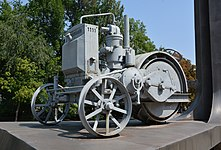
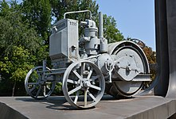

Diesel machine monument
Tokmak (Ukrainian: Токмак, pronounced [tokˈmɑk]) is a city in Polohy Raion in the Zaporizhzhia Oblast (province) of south-central Ukraine. The city stands on the River Tokmachka, a tributary of the River Tokmak. Prior to 2020, it served as the administrative center of the Tokmak Raion (district). Its population is approximately 30,132 (2021 est.)
History merchant building in Tokmak
Diesel machine monument
